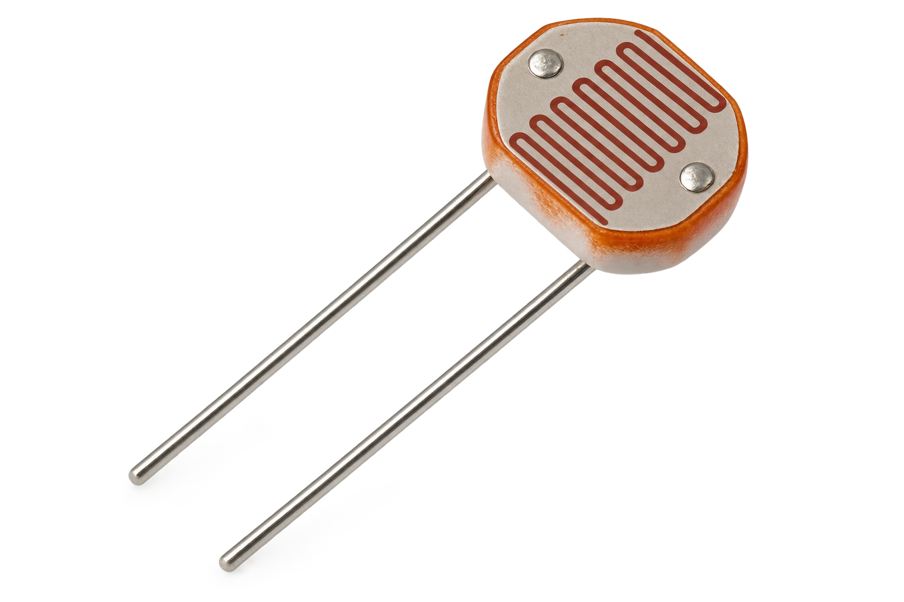

Aim
To identify the direction of the strongest light using three LDR sensing circuits and move a servo motor toward the corresponding direction using Arduino UNO.
About the Experiment
Three LDR circuits are used for left, center and right light sensing. They are connected to Arduino analog pins A0, A1 and A2.
The supplied program generates random light-intensity values every two seconds, finds the strongest direction and moves the servo smoothly to the corresponding angle.
Components Required

Arduino Board (×1)
Main controller for light comparison and servo control.

LDR (×3)
Used for left, center and right light sensing.

10 kΩ Resistors (×3)
Used in the LDR input circuits.

Servo Motor (×1)
Acts as the directional indicator.

Jumper Wires
Used for electrical connections.
Wiring / Pin Connections
| Section | Connection | Arduino / Supply |
|---|---|---|
| LDR 1 – Left | LDR Leg 1 | 5V |
| LDR 1 – Left | LDR Leg 2 | A0 |
| LDR 2 – Center | LDR Leg 1 | 5V |
| LDR 2 – Center | LDR Leg 2 | A1 |
| LDR 3 – Right | LDR Leg 1 | 5V |
| LDR 3 – Right | LDR Leg 2 | A2 |
| Servo | Red | 5V |
| Servo | Black / Brown | GND |
| Servo | Yellow / Orange | D9 |
Working Principle
↓
Light values are generated for Left, Center and Right
↓
Arduino compares all three values
↓
Strongest direction is identified
↓
Left → Servo moves to 30°
Center → Servo moves to 90°
Right → Servo moves to 150°
↓
Servo moves smoothly toward the selected direction
Center Angle: 90°
Right Angle: 150°
Update Interval: Every 2 seconds
Procedure
- Connect the left LDR circuit to A0.
- Connect the center LDR circuit to A1.
- Connect the right LDR circuit to A2.
- Connect the servo red wire to 5V.
- Connect the servo black/brown wire to GND.
- Connect the servo yellow/orange signal wire to D9.
- Connect Arduino UNO to the computer.
- Open Arduino IDE.
- Enter the program given below.
- Select Arduino UNO and the correct COM port.
- Verify and upload the program.
- Open Serial Monitor at 9600 baud.
- Observe the generated light values and servo direction.
Arduino Code
#include <Servo.h>
#define LDR_LEFT A0
#define LDR_CENTER A1
#define LDR_RIGHT A2
#define SERVO_PIN 9
Servo lightServo;
#define LEFT_ANGLE 30
#define CENTER_ANGLE 90
#define RIGHT_ANGLE 150
int leftLight;
int centerLight;
int rightLight;
int currentAngle = 90;
int targetAngle = 90;
unsigned long previousTime = 0;
const unsigned long interval = 2000;
void setup() {
Serial.begin(9600);
lightServo.attach(SERVO_PIN);
lightServo.write(currentAngle);
randomSeed(analogRead(A5));
Serial.println("Automatic Light Direction Indicator");
Serial.println("Random Light Simulation");
Serial.println("-----------------------------------");
delay(1000);
}
void loop() {
if (millis() - previousTime >= interval) {
previousTime = millis();
leftLight = random(0, 1024);
centerLight = random(0, 1024);
rightLight = random(0, 1024);
Serial.println();
Serial.println("New Light Intensity Values:");
Serial.print("Left LDR: ");
Serial.println(leftLight);
Serial.print("Center LDR: ");
Serial.println(centerLight);
Serial.print("Right LDR: ");
Serial.println(rightLight);
if (leftLight >= centerLight &&
leftLight >= rightLight) {
targetAngle = LEFT_ANGLE;
Serial.println("Strongest Light: LEFT");
}
else if (centerLight >= leftLight &&
centerLight >= rightLight) {
targetAngle = CENTER_ANGLE;
Serial.println("Strongest Light: CENTER");
}
else {
targetAngle = RIGHT_ANGLE;
Serial.println("Strongest Light: RIGHT");
}
Serial.print("Target Servo Angle: ");
Serial.println(targetAngle);
Serial.println("-----------------------------------");
}
if (currentAngle < targetAngle) {
currentAngle++;
lightServo.write(currentAngle);
delay(15);
}
else if (currentAngle > targetAngle) {
currentAngle--;
lightServo.write(currentAngle);
delay(15);
}
}Expected Output
Every two seconds, new light-intensity values are generated for the left, center and right directions. The servo moves toward the direction with the highest value.
Strongest Center: Servo moves to 90°
Strongest Right: Servo moves to 150°
Serial Monitor: Displays light values and selected direction
Result
The Automatic Light Direction Indication experiment was implemented using Arduino, three LDR sensing circuits and a servo motor. The system determines the strongest light direction and moves the servo toward the corresponding angle.
What You Learn
- How to work with multiple LDR inputs.
- How to compare three sensor values.
- How to control a servo motor using the Servo library.
- How to assign different servo angles to directions.
- How to use millis() for timed updates.
- How to generate simulated sensor values using random().
- How to move a servo smoothly toward a target angle.